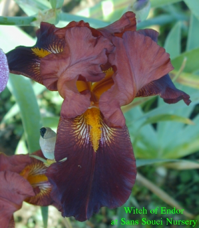
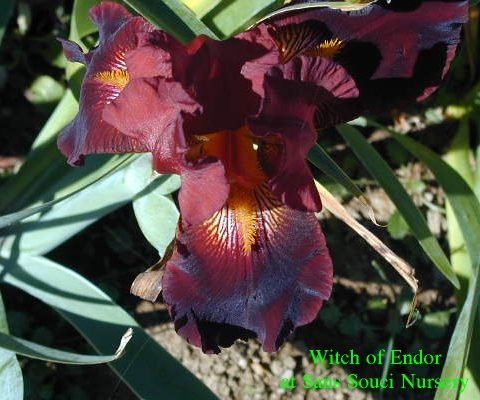

|
Back to TB Master Page
- Height: 38in (97cm)
- Season: EM
- Rebloom: September throough October
- Description:
Witch of Endor is a spectacular ruffled reblooming iris with black-crimson falls,
crimson standards and yellow-edged, chrimson-blushed style arms. Its golden beard is tipped black-crimson.
It is an excellent grower with a reliable rebloom from September through October.
These pictures were taken at Sans Souci Nursery September 14, 2004.
Sans Souci Nursery, LLC
Specializing In Irises
3819 Beatty Road
Monkton, Maryland 21111
Phone :(410) 557-0250
E-Mail:lbh0251@msn.com
© 2004 Sans Souci Nursery .
This image may only be used and/or reproduced by written permission of
Sans Souci Nursery.
Webpage and catalogue production by BATW Web Services
|